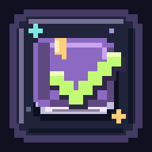

DEIN ABENTEUER WARTETDu bist gerade offline.
Verbinde dich mit dem Internet, um dich anzumelden und deine Quests zu laden oder zu speichern.
Dein gespeicherter Fortschritt bleibt in deinem Konto.

DEIN ABENTEUER WARTETVerbinde dich mit dem Internet, um dich anzumelden und deine Quests zu laden oder zu speichern.
Dein gespeicherter Fortschritt bleibt in deinem Konto.